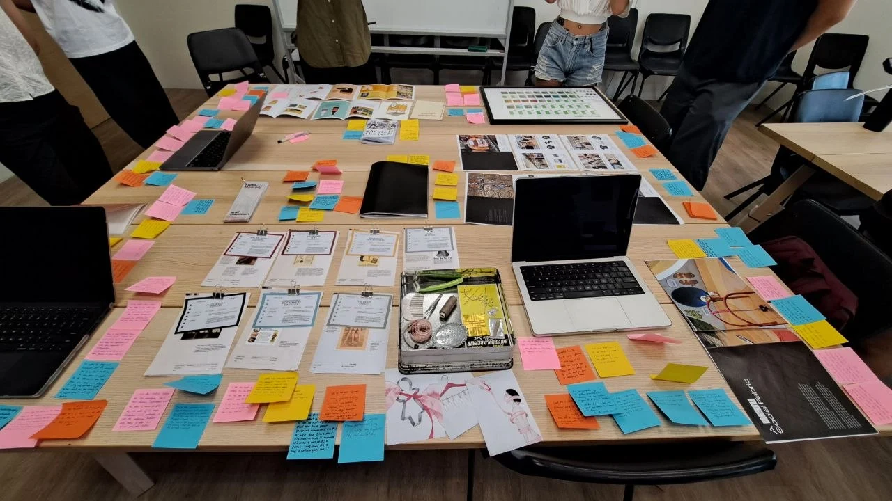
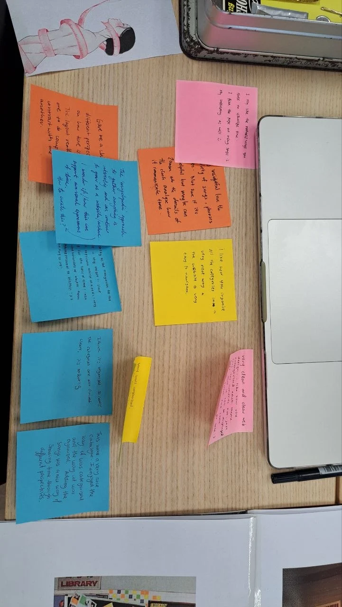

The one where we shared our catalogues!

Continued working on my catalogue
Showcase time
We had a sharing session with the class. It was great to see everyone's progress on their collected objects and makings, as well as how their catalogue was packaged.
My full archival website can be found here, which is called "The Archive of Felt Time".
Places for improvement for the catalogue

The feedback was largely positive (yay!) with relation to the design of the catalogue and its navigation, which my classmates felt was clear. Xiaotong suggested that another way of looking at this topic was perhaps to narrow in on the functions of the clock. Moving forward, I need to be more selective with my experiments, as they may not fall under the idea of "felt time" anymore.
Next week, we were tasked to do more making of our own initiation, which seems pretty intimidating.